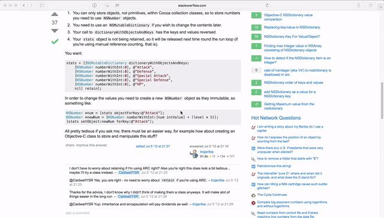

For the situation where you cannot copy or don't need to copy something. Like coding referring to a snippet of code on a webpage, or typing some text in a picture someone sent to you.
Inspired by the jailbreak tweak Snapper 2 on iOS.

The global shortcut is Shift + Option + Command + 4, which can be customized in the preference window.
- Double click to dismiss.
- Drag to resize.
- Scroll to adjust opacity.
Although it's not designed to do that but you can still right click to save the screenshot.
How to Build
The pods directory is not included in the repo so you need to run pod install manually:
git clone https://github.com/JeziL/PinShot.git
cd PinShot
pod install
open PinShot.xcworkspace
If you don't have CocoaPods installed, install it.